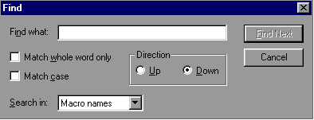

|
Searching |
||
Select Edit - Find. You will be presented with a Find dialog box:
Find. You will be presented with a Find dialog box:

Using this dialog box you can search for an exact text string in any one of three ways, as specified by your selection in the "Search in" drop-list:
Macro names - the search is for a text match within configuration item macro names
Item names - the search is for a text match within configuration item descriptive names
Short descriptions - the search is for a text match within configuration item short descriptions
Current values - the search is a text match within configuration item current values
Default values - the search is a text match within configuration item default values
Note that to invoke Find you can also click the Find icon on the toolbar.
You can repeat your search without showing the Find
dialog box, by using the Edit - Find Next menu item or by pressing F3.
Find Next menu item or by pressing F3.
|
Searching |
||